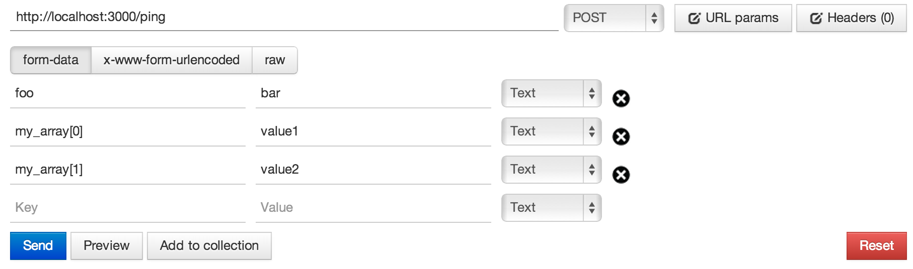
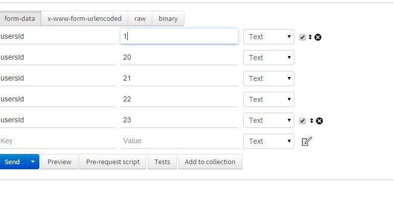

Is it possible to send an array with the Postman Chrome extension?
I've been using Postman Chrome extension to test out my API and would like to send an array of IDs via post. Is there a way to send something list this as a parameter in Postman?
{
user_ids: ["1234", "5678"]
}
Answer
You need to suffix your variable name with [] like this:

If that doesn't work, try not putting indexes in brackets:
my_array[] value1 my_array[] value2
Note:
-
If you are using the postman packaged app, you can send an array by selecting
raw/json(instead ofform-data). Also, make sure to setContent-Typeasapplication/jsoninHeaderstab. Here is example for raw data{"user_ids": ["123" "233"]}, don't forget the quotes! -
If you are using the postman REST client you have to use the method I described above because passing data as raw (json) won't work. There is a bug in the postman REST client (At least I get the bug when I use
0.8.4.6).
Suggest
For me did not work with array[0], array1, .. or array[], array[], ... . It works more simply: 